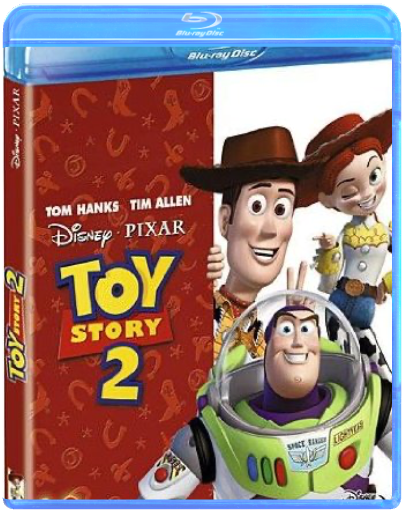

walt disney, 51 : 1001 pattes - édition collectorwalt disney walt disney, 51 : 1001 pattes - édition collectorwalt disney  La magie était telle lors de la sortie en 1995 de Toy Story – premier film entièrement conçu par ordinateur – que, lorsque la société Pixar sortit son deuxième long métrage, 1001 pattes, on pouvait craindre d'être moins emballé. Le film est pourtant irrésistible. Plus vivant et plus coloré que l'autre film d'animation avec des insectes, sorti en 1998 (Fourmiz), 1001 pattes conte la belle histoire de Flik. Cette fourmi et sa communauté vivent dans la crainte des sauterelles et de leur terrible chef, Hopper, qu'ils doivent nourrir. Lorsque Flik détruit accidentellement la récolte destinée aux sauterelles, il décide d'aller chercher de l'aide, guidé par une idée simple : "Il nous faut des insectes plus gros !" Les fourmis, dirigées par la princesse Atta, sont assez heureuses de se débarrasser ainsi de cette source d'ennuis. Seulement Flik revient, après avoir trouvé du secours auprès d'une troupe d'insectes de cirque – qui craignent malheureusement la bagarre. Tout comme dans Toy Story, les personnages sont dans leur ensemble remarquables et souvent pittoresques. Parmi les plus sympathiques, une coccinelle aux mauvaises manières, un phasme et une paire de puces incompréhensibles. Toutefois, c'est la petite sœur de la princesse Atta, bébé Dot – qui en pince pour Flik –, qui fera fondre le cœur des spectateurs. Destiné à un public plus jeune que Fourmiz, 1001 pattes offre une bonne dose de suspense préparant un happy end et l'élimination du méchant. Cette édition collector double DVD comblera les fans de toutes ces petites bêtes à travers de nombreux bonus retraçant toutes les étapes de la réalisation du film (de sa préparation à sa sortie en DVD) ou encore un nouveau bêtisier, toujours aussi hilarant. —Doug Thomas  walt disney, 52 : tarzan - édition collectorwalt disney walt disney, 52 : tarzan - édition collectorwalt disney Le 38ème long-métrage des studios Disney est consacré à un mythe déjà adapté pas moins de 47 fois au cinéma ! Pari difficile (mais tenu) que cette appropriation des aventures du héros mi-homme mi-animal dont les déplacements donnent matière à une créativité visuelle débordante et communiquent aux spectateurs de véritables sensations. Loin d’être une pâle copie du Livre de la jungle, le film possède son univers propre, notamment par son exploration plus profonde des rapports filiaux et de la quête identitaire menée par son héros. Un Tarzan pour tous publics qui a de plus le mérite de proposer avec Jane un personnage féminin qui, pour une fois, n'est pas une bécasse en attente du prince charmant. walt disney, 53 : toy story 2walt disney Privé de camp de vacances avec Andy parce que son bras est déchiré, Woody est relégué sur l'étagère du garçonnet. S'échappant de la maison pour sauver un autre jouet d'un vide-grenier, un collectionneur l'aperçoit et le kidnappe...  walt disney, 61 : atlantide, l'empire perdu - édition collectorwalt disney walt disney, 61 : atlantide, l'empire perdu - édition collectorwalt disney Attention, Atlantide en vue. Milo, un jeune cartographe aventurier dans l'âme, mais beaucoup moins sur le terrain, se retrouve à la tête d'une équipe en quête de la célèbre cité perdue. Après Kuzco, l'empereur mégalo, les studios Walt Disney continuent à distiller un humour moderne et irrévérencieux dans leurs nouveaux dessins animés par le biais de personnages plutôt cyniques. Ici, une vieille acariâtre fumant cigarette sur cigarette. Là, Gaëtan, un homme répugnant mais sympathique, se prenant pour une taupe. Entre ces personnages étonnants et survoltés évoluent le jeune scientifique Milo et la belle Kida, princesse de l'Atlantide. Les réalisateurs Gary Trousdale et Kirk Wise insufflent un vent de magie et un souffle épique digne des Aventuriers de l'arche perdue, une pointe d'amour et un humour qui touchera aussi bien les petits que les grands, les scènes drôles possédant plusieurs niveaux de lecture. Un grand dessin animé familial. —Marc Maesen  walt disney, 64 : monstres & cie - édition collectorwalt disney walt disney, 64 : monstres & cie - édition collectorwalt disney Voilà un film hilarant qui aura en outre le mérite de rassurer les plus jeunes. En effet, les "terrifiantes" créatures de Monstres et Cie, qui tirent leur énergie des hurlements d'effroi des bambins, ont un léger défaut dans la cuirasse : ils ont peur des enfants. Une peur panique, qui prend une tournure dramatiquement drôle lorsqu'une (toute) petite fille parvient à se faufiler dans leur monde. Après une paire de Toy Story et l'excellent 1001 pattes, les équipes de Pixar réalisent encore une fois un coup gagnant avec cette histoire de monstres parfaitement réussie. Animation parfaite, personnages attachants – au premier rang desquels une adorable boule de poils bleus –, scénario prenant et surtout humour omniprésent, tout concourt à faire de ces 90 minutes un pur moment de bonheur. Sans doute destiné à un public plus jeune que ces prédécesseurs, Monstres et Cie séduira néanmoins également les adultes, notamment grâce à ce DVD en tout point parfait et qui permet en outre de profiter du film dans une version originale au casting ahurissant (John Goodman, Billy Crystal, James Coburn [!], Steve Buscemi). —Michaël Cuq |


 Made with Delicious Library
Made with Delicious LibraryNancy, State zipflap congrotus delicious library Thomas, Julien